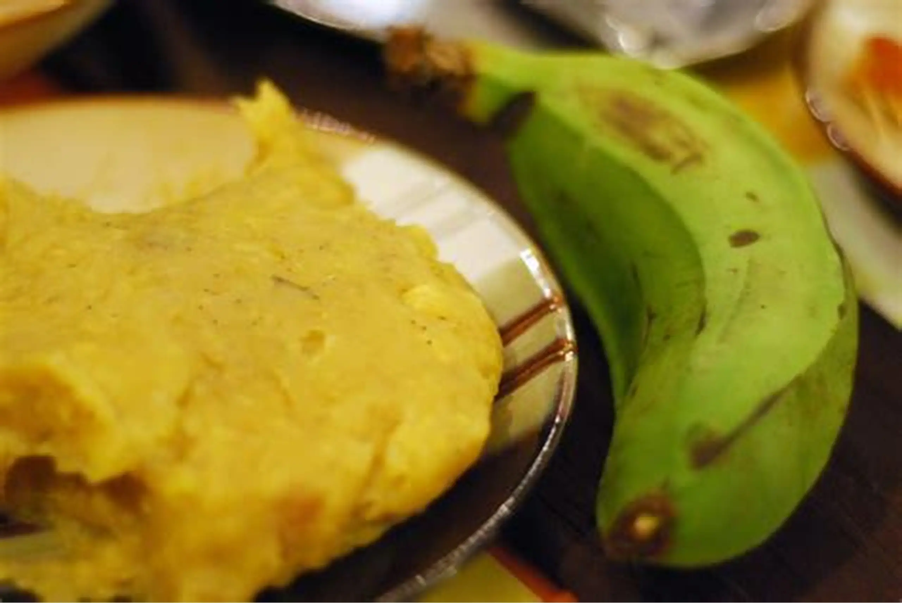
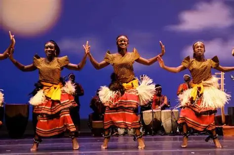

Rolex
Rolex is a popular street food in Uganda made by rolling eggs and vegetables inside chapati. It is loved because it is tasty, affordable, and quick to prepare. Rolex is commonly sold in towns, markets, and roadside food stalls
Rolex is a popular street food in Uganda made by rolling eggs and vegetables inside chapati. It is loved because it is tasty, affordable, and quick to prepare. Rolex is commonly sold in towns, markets, and roadside food stalls

Matoke is a traditional Ugandan food made from steamed green bananas. It is usually served with meat, beans, or groundnut sauce. Matooke is one of the most common meals eaten in many homes across Uganda.

Traditional dance is an important part of Ugandan culture and is performed during ceremonies and celebrations. Different tribes in Uganda have their own unique dances, songs, and drums. These dances help preserve culture and entertain both locals and tourists.ganda has many cultural dances from different tribes, each with its own unique movements and significance.